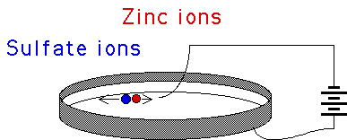

| Putting a circular electrode around the inside edge of a Petri dish,
filling the dish with a zinc or copper sulfate solution, and floating another electrode on the liquid
surface near the middle of the Perti dish, an applied electrical current can
grow a beautiful DLA crystal on the liquid surface. |
|  |
 |
| Click the right picture for a larger version in a new window. |
|
| The crystal growth is governed by diffusion of the ions through the
solution, so the resemblance to DLA is not surprising. |
| Among the supporting observations,
we mention that the higher the voltage of the power source, the more filled-in are the
branch tips. Higher voltage attracts the ions more quickly, so there is a lower probability
of wandering through the fjords without sticking to a branch. |
| Here are pictures of crysals
grown in zinc sulphate solutions, with voltages of 2, 3, 4, 6, 8, and 10V. |
|
| Here is one more example (left) and the result of a simulation (right). |
|
| Here are some experimental results on measuring the dimension of the clusters. |
| Copper sulfate electrodeposits gives dm = 2.43,
Brady and Ball. |
| Zinc metal leaf electrodeposits gives dm = 1.66 for
low voltages, Matsushita, Sano,
Hayakawa, Honjo and Sawada. |
| Meakin reports that Kapitulnick obtained
a dimension of about
1.7 for sputter-deposited niobium/germainum on thin films, and about 2.5 for
electrodeposited polypyrrole. |